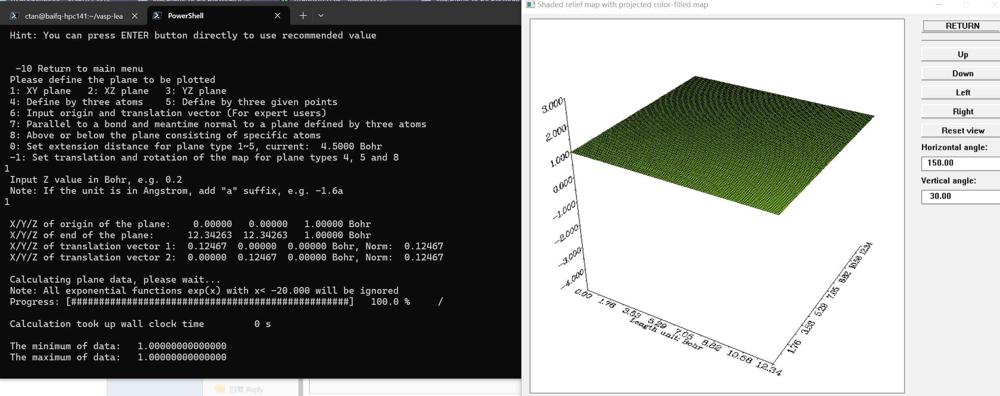
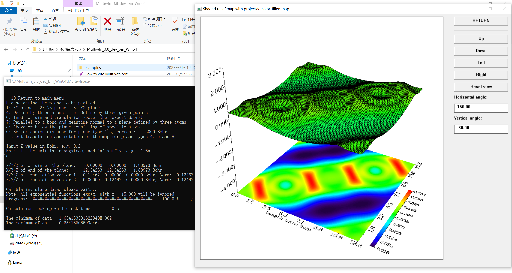

使用Multiwfn加载ELFCAR文件绘制等值面图
本文仅为学习记录，并非教程
Multiwfn是一个波函数分析程序，功能非常强大，也能绘制ELF等值面图，它支持多种类型的输入文件，既有量子化学计算程序的输出文件，又有第一性原理计算程序的输出文件
-1756610428425-1.png)
以下是Multiwfn加载ELFCAR绘制等值面图的过程
- step1：用
ELFCAR绘图其实是基于格点数据文件的绘图，需要修改根目录下的配置文件settings.ini，将参数iuserfunc改为-1或者-3 - step2：加载
ELFCAR文件 - step3：4 Output and plot specific property in a plane
- step4：100 User-defined function (iuserfunc=
- step5：5 Shaded relief map with projection
- step6：1: XY plane
- step7：1a
如果将Multiwfn的根目录添加到PATH环境变量以方便调用，那么画出来的图可能会遇到如下如题

如果直接在根目录下双击.exe文件运行的话就能正常绘图

本博客所有文章除特别声明外，均采用 CC BY-NC-SA 4.0 许可协议。转载请注明来源 Storm's Storehouse！
相关推荐

2026-02-09
表面吸附能的计算——以一篇小NC为例
假期简单复习的了一下LVTHW的部分内容，也顺便练习了一下吸附能的计算。练习例子是一篇小NC_Nat Commun_ 13, 6853 (2022)中的一个示例，引用量看起来还蛮高的 文章提出了PBE+D3/M06 混合计算方法，用于精准描述过渡金属表面吸附能和反应势垒，首先来试一下PBC边界条件下的PBE计算 VASP的周期性计算部分 文献中的例子比较多，选了一个经典的CO在Pt(111)晶面上的吸附。 ¶建模 首先是建立模型，FCC的Pt晶胞来自于Material Studio中自带的例子，根据文献，本次结构的吸附气体覆盖度为 #mjx-c915944{ display:contents; mjx-assistive-mml { user-select: text !important; clip: auto !important; color: rgba(0,0,0,0); } mjx-container[jax...

2025-05-12
2025年5月Intel平台VASP.6.4.3的编译安装
==请参考VASP官方wiki中关于编译工具链的介绍部分：https://www.vasp.at/wiki/Toolchains== 2025年5月Intel平台VASP.6.4.3的编译安装 ¶WSL的安装 选择Arch Linux，个人比较熟悉，仅供学习使用不作为稳定的生产力环境，配置如下，两颗E5 2676 v3 打开powershell或者终端，输入wsl --install archlinux以自动安装，这一步需要使用代理(MAGIC)，主机上使用Clash-Verge进行代理（运气好也能连上），终端中输入： 12set http_proxy=http://127.0.0.1:7897 #自己使用的端口是7897，http代理set https_proxy=http://127.0.0.1:7897 #自己使用的端口是7897，https代理 如果没有条件使用代理，也可以手动安装，参考Arch Wiki，https://wiki.archlinuxcn.org/wiki/在_WSL_上安装_Arch_Linux，手动下载`.wsl`镜像，然后安装 笔者计算机C盘性能...

2025-08-31
能带的计算以及origin绘制能带图
终于也是把文献整理得差不多了，博客也翻新了一下，继续分享一些之前的计算。 我的计算体系是Argyrodite硫化物固态电解质体系，计算以 #mjx-42d35f4{ display:contents; mjx-assistive-mml { user-select: text !important; clip: auto !important; color: rgba(0,0,0,0); } mjx-container[jax="SVG"] { direction: ltr; } mjx-container[jax="SVG"] > svg { overflow: visible; min-height: 1px; min-width: 1px; } mjx-container[jax="SVG"] > svg a { fill: blue; stroke: blue; } mjx-assi...

2025-05-12
ATAT无序掺杂测试
¶测试案例 首先进入一个新目录，然后拷贝测试文件： 1cp ../atat/examples/cuau.in lat.in 让Maps开始运行： 1maps -d & 现在Maps已经开始运行，等待下一步的指令，输入命令开始生成结构： 1touch ready 大概在10s内，Maps会回应：replies Finding best structure...，此时可以输入： 1ls */wait 查看进入，返回0说明完事了，0目录里包含str.out文件，它描述了需要计算能量的结构，比如： 12345678(base) storm@cernet2:~/test/0$ cat str.out 3.800000 0.000000 0.0000000.000000 3.800000 0.0000000.000000 0.000000 3.8000000.500000 0.000000 0.5000000.500000 0.500000 0.000000-0.000000 0.500000 0.5000001.000000 1.000000 1.000000 Cu The clu...

2025-04-14
VASP中的各种报错
如题，记录一下在计算时遇到的各种报错 ¶2025.05.14 12345678910111213141516 -----------------------------------------------------------------------------| || EEEEEEE RRRRRR RRRRRR OOOOOOO RRRRRR ### ### ### || E R R R R O O R R ### ### ### || E R R R R O O R R ### ### ### || EEEEE RRRRRR RRRRRR O O RRRRRR ...

2025-07-20
关于固体化学
从固体材料的化学组成来区，主要有无机、有机和金属三大类材料。固体物质可以按照其中原子排列的有序成都分类为晶态固体和非晶态固体，后者类似于液体，只在及个原子间距的短程范围内具有源自有序的状态，比如玻璃和许多聚合物可以看作是过冷的液体，它们中间的原子排列是没有一定的格子的。 金属键和金属晶体 ¶金属的自由电子模型 20世纪初，Drude和Lorentz提出了自由电子论。金属都是电离能第、颠覆性小的元素，这些元素容易失去外层价电子，形成正离子，正离子按照紧密堆积的方式形成晶体，价电子在整个金属晶体中自由运动，为所有原子所共有。自由电子处于类似于理想气体的状态，可以看作是自由电子气 在金属表面存在着一种把自由电子限制在金属范围内的是能查，但是在金属内部，势能是相对均匀的，好像自由电子是在一个均匀的正电场中运动着，势能相对为0. 当沿着与电流在金属晶体中运动方向垂直的方向上再施加一个外磁场时，电子将受到Lorentz力而偏向某一侧，这便是霍尔效应。大多数金属的霍尔系数小于零，即载流子是电子。然而有一些金属如Zn，Cd，Pb等，其霍尔系数大于零，载流子密度月底，霍尔系数值越高，但是由霍尔效应...
评论